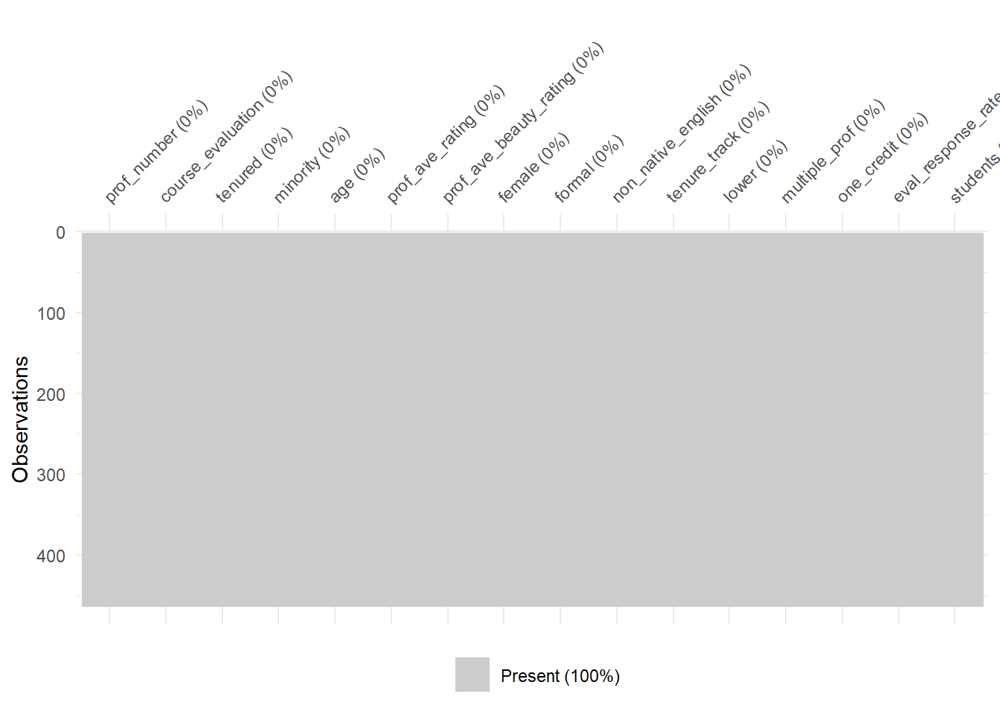
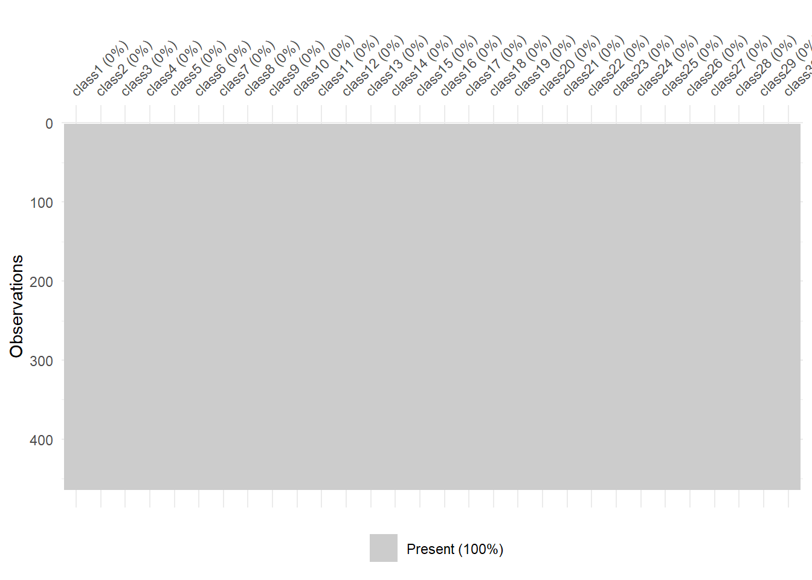
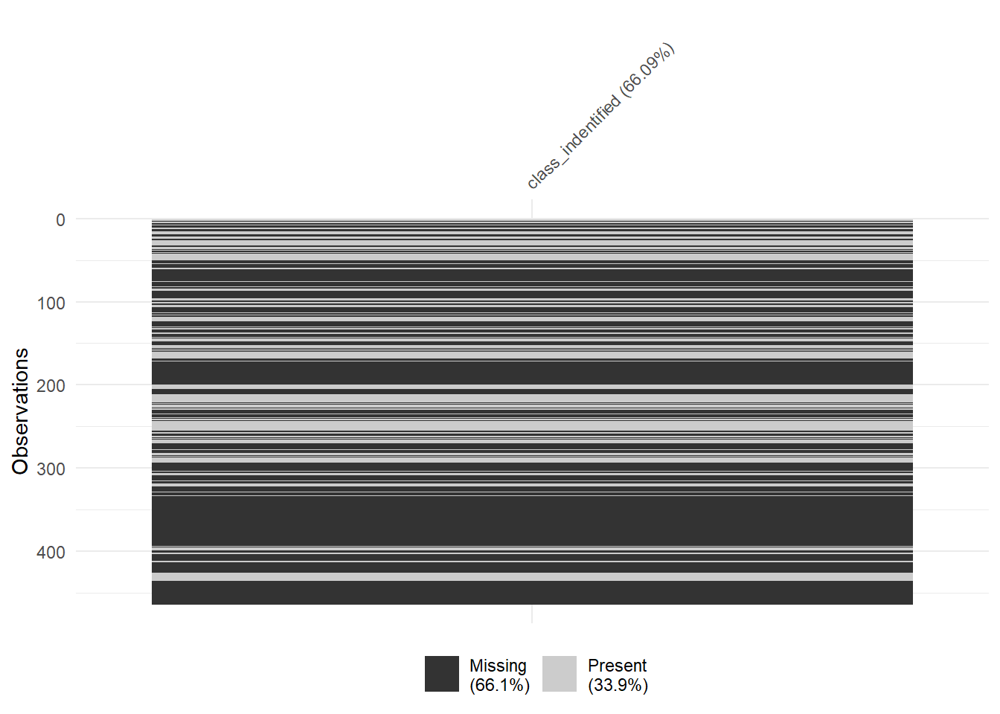
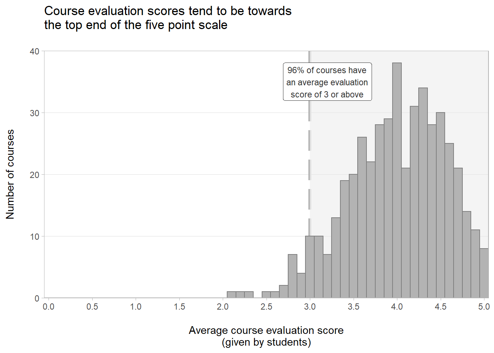
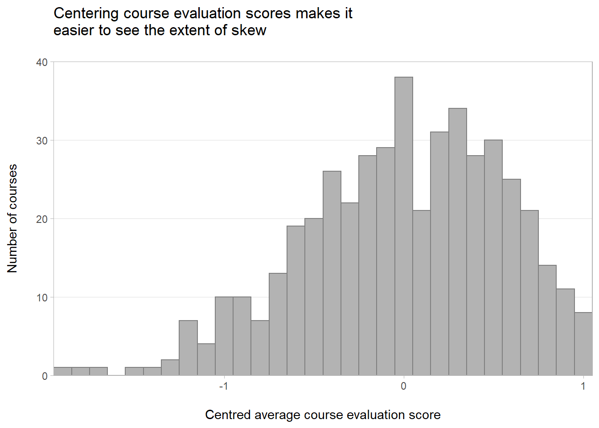

Chapter 2 Linear regression: Predicting course evaluation scores
# import packages used in this notebook
suppressPackageStartupMessages({
suppressWarnings({
# core libraries
library(tidyverse)
# helper libraries
library(janitor) # for cleaning names
library(skimr) # for summary statistic reports
library(glue) # for string formattin
})
})# global setting for notebook
theme_set(theme_light())
# import my own plotting functions for styling plots
source("plotting_functions.R")2.1 Processing the data
2.1.1 Importing the data
The data I am using in this project is available in the github repository for the book ‘Regression and Other Stories.’ So, I can read in the csv directly from the repository.
# set url for dataset
data_url <- "https://raw.githubusercontent.com/avehtari/ROS-Examples/master/Beauty/data/ProfEvaltnsBeautyPublic.csv"
# read data from github
teaching_eval <- read_csv(data_url) %>%
janitor::clean_names() # try to clean up names
# display dataframe for initial inspection
glimpse(teaching_eval)## Rows: 463
## Columns: 64
## $ tenured <dbl> 0, 1, 1, 1, 0, 1, 0, 1, 0, 0, 0, 0, 1, 1, 0, 1, 0, 0~
## $ profnumber <dbl> 1, 2, 3, 4, 5, 6, 7, 8, 9, 10, 11, 12, 13, 14, 15, 1~
## $ minority <dbl> 1, 0, 0, 0, 0, 0, 0, 0, 0, 0, 1, 0, 0, 0, 0, 0, 0, 0~
## $ age <dbl> 36, 59, 51, 40, 31, 62, 33, 51, 33, 47, 35, 37, 42, ~
## $ beautyf2upper <dbl> 6, 2, 5, 4, 9, 5, 5, 6, 5, 6, 4, 5, 5, 5, 7, 3, 1, 6~
## $ beautyflowerdiv <dbl> 5, 4, 5, 2, 7, 6, 4, 4, 3, 5, 5, 4, 4, 3, 6, 2, 3, 3~
## $ beautyfupperdiv <dbl> 7, 4, 2, 5, 9, 6, 4, 6, 7, 7, 7, 5, 7, 3, 7, 4, 4, 5~
## $ beautym2upper <dbl> 6, 3, 3, 2, 6, 6, 4, 3, 5, 6, 7, 4, 5, 5, 4, 7, 3, 4~
## $ beautymlowerdiv <dbl> 2, 2, 2, 3, 7, 5, 4, 2, 5, 3, 2, 3, 4, 1, 5, 5, 2, 4~
## $ beautymupperdiv <dbl> 4, 3, 3, 3, 6, 5, 4, 3, 3, 6, 4, 5, 4, 7, 4, 4, 2, 4~
## $ btystdave <dbl> 0.2015666, -0.8260813, -0.6603327, -0.7663125, 1.421~
## $ btystdf2u <dbl> 0.2893519, -1.6193560, -0.1878249, -0.6650018, 1.720~
## $ btystdfl <dbl> 0.4580018, -0.0735065, 0.4580018, -1.1365230, 1.5210~
## $ btystdfu <dbl> 0.8758139, -0.5770065, -1.5455530, -0.0927330, 1.844~
## $ btystdm2u <dbl> 0.6817153, -1.1319040, -1.1319040, -1.7364440, 0.681~
## $ btystdml <dbl> -0.9000649, -0.9000649, -0.9000649, -0.3125226, 2.03~
## $ btystdmu <dbl> -0.1954181, -0.6546507, -0.6546507, -0.6546507, 0.72~
## $ class1 <dbl> 0, 0, 0, 0, 0, 0, 0, 0, 0, 0, 0, 0, 0, 0, 0, 0, 0, 0~
## $ class2 <dbl> 0, 0, 0, 1, 0, 0, 0, 0, 0, 0, 0, 0, 0, 0, 0, 0, 0, 0~
## $ class3 <dbl> 1, 0, 0, 0, 0, 0, 0, 0, 0, 0, 0, 0, 0, 0, 0, 0, 0, 0~
## $ class4 <dbl> 0, 0, 1, 0, 0, 0, 1, 0, 0, 1, 1, 0, 0, 0, 0, 0, 0, 0~
## $ class5 <dbl> 0, 0, 0, 0, 0, 0, 0, 0, 0, 0, 0, 0, 0, 0, 0, 0, 0, 0~
## $ class6 <dbl> 0, 0, 0, 0, 0, 0, 0, 0, 0, 0, 0, 0, 0, 0, 0, 0, 0, 0~
## $ class7 <dbl> 0, 0, 0, 0, 0, 0, 0, 0, 0, 0, 0, 0, 0, 0, 0, 0, 0, 0~
## $ class8 <dbl> 0, 0, 0, 0, 0, 0, 0, 0, 0, 0, 0, 0, 0, 0, 0, 0, 0, 0~
## $ class9 <dbl> 0, 0, 0, 0, 0, 0, 0, 0, 0, 0, 0, 0, 0, 0, 1, 1, 0, 0~
## $ class10 <dbl> 0, 0, 0, 0, 0, 0, 0, 0, 0, 0, 0, 0, 0, 0, 0, 0, 1, 0~
## $ class11 <dbl> 0, 0, 0, 0, 0, 0, 0, 0, 0, 0, 0, 0, 0, 0, 0, 0, 0, 0~
## $ class12 <dbl> 0, 0, 0, 0, 0, 0, 0, 0, 0, 0, 0, 0, 0, 0, 0, 0, 0, 0~
## $ class13 <dbl> 0, 0, 0, 0, 0, 0, 0, 0, 0, 0, 0, 0, 0, 0, 0, 0, 0, 0~
## $ class14 <dbl> 0, 0, 0, 0, 0, 0, 0, 0, 0, 0, 0, 0, 0, 0, 0, 0, 0, 0~
## $ class15 <dbl> 0, 0, 0, 0, 0, 0, 0, 0, 0, 0, 0, 0, 0, 0, 0, 0, 0, 0~
## $ class16 <dbl> 0, 0, 0, 0, 0, 0, 0, 0, 0, 0, 0, 0, 0, 0, 0, 0, 0, 0~
## $ class17 <dbl> 0, 0, 0, 0, 0, 0, 0, 0, 0, 0, 0, 0, 0, 0, 0, 0, 0, 0~
## $ class18 <dbl> 0, 0, 0, 0, 0, 0, 0, 0, 0, 0, 0, 0, 0, 0, 0, 0, 0, 0~
## $ class19 <dbl> 0, 0, 0, 0, 0, 0, 0, 0, 0, 0, 0, 0, 0, 0, 0, 0, 0, 0~
## $ class20 <dbl> 0, 0, 0, 0, 0, 0, 0, 0, 0, 0, 0, 0, 0, 0, 0, 0, 0, 0~
## $ class21 <dbl> 0, 0, 0, 0, 0, 0, 0, 0, 0, 0, 0, 0, 0, 0, 0, 0, 0, 0~
## $ class22 <dbl> 0, 0, 0, 0, 0, 0, 0, 0, 0, 0, 0, 0, 0, 0, 0, 0, 0, 0~
## $ class23 <dbl> 0, 0, 0, 0, 0, 0, 0, 0, 0, 0, 0, 0, 0, 0, 0, 0, 0, 0~
## $ class24 <dbl> 0, 0, 0, 0, 0, 0, 0, 0, 0, 0, 0, 0, 0, 0, 0, 0, 0, 0~
## $ class25 <dbl> 0, 0, 0, 0, 0, 0, 0, 0, 0, 0, 0, 0, 0, 0, 0, 0, 0, 0~
## $ class26 <dbl> 0, 0, 0, 0, 0, 0, 0, 0, 0, 0, 0, 0, 0, 0, 0, 0, 0, 0~
## $ class27 <dbl> 0, 0, 0, 0, 0, 0, 0, 0, 0, 0, 0, 0, 0, 0, 0, 0, 0, 0~
## $ class28 <dbl> 0, 0, 0, 0, 0, 0, 0, 0, 0, 0, 0, 0, 0, 0, 0, 0, 0, 0~
## $ class29 <dbl> 0, 0, 0, 0, 0, 0, 0, 0, 0, 0, 0, 0, 0, 0, 0, 0, 0, 0~
## $ class30 <dbl> 0, 0, 0, 0, 0, 0, 0, 0, 0, 0, 0, 0, 0, 0, 0, 0, 0, 0~
## $ courseevaluation <dbl> 4.3, 4.5, 3.7, 4.3, 4.4, 4.2, 4.0, 3.4, 4.5, 3.9, 3.~
## $ didevaluation <dbl> 24, 17, 55, 40, 42, 182, 33, 25, 48, 16, 18, 30, 28,~
## $ female <dbl> 1, 0, 0, 1, 1, 0, 1, 1, 1, 0, 0, 0, 0, 0, 1, 0, 1, 0~
## $ formal <dbl> 0, 0, 0, 0, 0, 1, 0, 0, 0, 0, 0, 0, 0, 0, 0, 0, 0, 0~
## $ fulldept <dbl> 1, 1, 1, 1, 1, 1, 1, 1, 1, 1, 1, 1, 1, 1, 1, 1, 1, 1~
## $ lower <dbl> 0, 0, 0, 0, 0, 0, 0, 0, 0, 0, 0, 0, 0, 0, 0, 0, 0, 1~
## $ multipleclass <dbl> 1, 0, 1, 1, 0, 0, 1, 0, 0, 1, 1, 0, 0, 0, 1, 1, 1, 0~
## $ nonenglish <dbl> 0, 0, 0, 0, 0, 0, 0, 0, 0, 0, 1, 0, 0, 1, 0, 0, 0, 0~
## $ onecredit <dbl> 0, 0, 0, 0, 0, 0, 0, 0, 0, 0, 0, 0, 0, 0, 0, 0, 0, 0~
## $ percentevaluating <dbl> 55.81395, 85.00000, 100.00000, 86.95652, 87.50000, 6~
## $ profevaluation <dbl> 4.7, 4.6, 4.1, 4.5, 4.8, 4.4, 4.4, 3.4, 4.8, 4.0, 3.~
## $ students <dbl> 43, 20, 55, 46, 48, 282, 41, 41, 60, 19, 25, 34, 40,~
## $ tenuretrack <dbl> 1, 1, 1, 1, 1, 1, 1, 1, 1, 0, 1, 0, 1, 1, 1, 1, 0, 0~
## $ blkandwhite <dbl> 0, 0, 0, 0, 0, 0, 0, 0, 0, 0, 0, 0, 0, 0, 0, 0, 0, 0~
## $ btystdvariance <dbl> 2.1298060, 1.3860810, 2.5374350, 1.7605770, 1.693100~
## $ btystdavepos <dbl> 0.201567, 0.000000, 0.000000, 0.000000, 1.421450, 0.~
## $ btystdaveneg <dbl> 0.000000, -0.826081, -0.660333, -0.766312, 0.000000,~Next I focused down on variables within the dataset to be used in the exploratory data analysis and modeling below. I reviewed the data code book to identify the outcome variable and promising potential predictor variables. A number of variables have been dropped in the process of focusing down the dataset , as I thought these dropped variable were unlikely to important predictors of course_evaluation scores. This was a judgment based on my experiences of working in various universities over a decade or so.
Due to the nature of the variable names in the dataset, automatically cleaning all variables names to make readable and easy to interpret was not possible. So, in the process of focusing down the dataset I renamed various variables to make them easier to remember, interpret and work with. I also reorder the variables to group them in a more logical order: an outcome variable, followed by potential predictors relating to the professor, and then potential predictors relating to the class.
# focus down on features in the dataset with a good potential to act as predictors
teaching_eval_focus <- teaching_eval %>%
select(
# select and rename outcome variable
course_evaluation = courseevaluation,
# select and rename potential predictor variables relating to the professor
tenured:age,
prof_ave_rating = profevaluation,
prof_ave_beauty_rating = btystdave,
female, formal,
non_native_english = nonenglish,
tenure_track = tenuretrack,
# select and rename potential predictor relating relating to the course
lower,
multiple_prof = multipleclass,
one_credit = onecredit,
eval_response_rate = percentevaluating,
students,
class1:class30 # dummy variables
) %>%
# Move a potential indentifer variable to the front of the dataframe
# and rename for consistency
rename(prof_number = profnumber) %>%
relocate(prof_number, .before = course_evaluation)
teaching_eval_focus ## # A tibble: 463 x 46
## prof_number course_evaluation tenured minority age prof_ave_rating
## <dbl> <dbl> <dbl> <dbl> <dbl> <dbl>
## 1 1 4.3 0 1 36 4.7
## 2 2 4.5 1 0 59 4.6
## 3 3 3.7 1 0 51 4.1
## 4 4 4.3 1 0 40 4.5
## 5 5 4.4 0 0 31 4.8
## 6 6 4.2 1 0 62 4.4
## 7 7 4 0 0 33 4.4
## 8 8 3.4 1 0 51 3.4
## 9 9 4.5 0 0 33 4.8
## 10 10 3.9 0 0 47 4
## # ... with 453 more rows, and 40 more variables: prof_ave_beauty_rating <dbl>,
## # female <dbl>, formal <dbl>, non_native_english <dbl>, tenure_track <dbl>,
## # lower <dbl>, multiple_prof <dbl>, one_credit <dbl>,
## # eval_response_rate <dbl>, students <dbl>, class1 <dbl>, class2 <dbl>,
## # class3 <dbl>, class4 <dbl>, class5 <dbl>, class6 <dbl>, class7 <dbl>,
## # class8 <dbl>, class9 <dbl>, class10 <dbl>, class11 <dbl>, class12 <dbl>,
## # class13 <dbl>, class14 <dbl>, class15 <dbl>, class16 <dbl>, class17 <dbl>,
## # class18 <dbl>, class19 <dbl>, class20 <dbl>, class21 <dbl>, class22 <dbl>,
## # class23 <dbl>, class24 <dbl>, class25 <dbl>, class26 <dbl>, class27 <dbl>,
## # class28 <dbl>, class29 <dbl>, class30 <dbl>2.1.2 Checking for missing values
Next I checked for missing data. While importing the data I notice there were 30 dummy variables used to identify the class being evaluated. I wanted to look in a bit more detail at potential missing values across the dummy variables. So, first I removed the dummy variables and looked at all the other variables. From the missing values check below it looks like this dataset has already to processed as not NAs have been identified.
visdat::vis_miss(teaching_eval_focus %>%
select(-starts_with("class")))
At first glance the there are no NAs identified for the dummy variables, for all pairs of observations of observations and dummy variables either a 1 or a 0 is recorded.
visdat::vis_miss(teaching_eval_focus %>%
select(starts_with("class")))
However, if looking at these dummy variables in more detail it is clear that a lot of data is missing. By summing the all the dummy variables for a given observation, we can see if any classes are recorded for each observation. I would expect this to be 1 where a class is recorded and 0 where a class is not recorded. Hence, in this context a 0 actually corresponds to a missing value and in the plot below we can see that for approximately two thirds of observations a class is not recorded.
# check if each evaluation has a class (1-30) associated with it
# by processing the dummy variables
dummy_var_row_sum <- teaching_eval_focus %>%
select(class1:class30) %>%
rowSums() %>%
as_tibble() %>%
rename(class_indentified = value) # not all evaluations have a class # associated with them
visdat::vis_miss(dummy_var_row_sum %>%
na_if(0))
Working with the dummy variables in the analysis and modeling below would entail dropping two thirds observations and n = 463. So, although I recognized the course identifier dummy variables as potentially important predictors of course_evaluation I dropped them from the analysis, rather than loose so many observations from the dataset.
teaching_eval_clean <- teaching_eval_focus %>%
select(-starts_with("class"))
glimpse(teaching_eval_clean)## Rows: 463
## Columns: 16
## $ prof_number <dbl> 1, 2, 3, 4, 5, 6, 7, 8, 9, 10, 11, 12, 13, 14, ~
## $ course_evaluation <dbl> 4.3, 4.5, 3.7, 4.3, 4.4, 4.2, 4.0, 3.4, 4.5, 3.~
## $ tenured <dbl> 0, 1, 1, 1, 0, 1, 0, 1, 0, 0, 0, 0, 1, 1, 0, 1,~
## $ minority <dbl> 1, 0, 0, 0, 0, 0, 0, 0, 0, 0, 1, 0, 0, 0, 0, 0,~
## $ age <dbl> 36, 59, 51, 40, 31, 62, 33, 51, 33, 47, 35, 37,~
## $ prof_ave_rating <dbl> 4.7, 4.6, 4.1, 4.5, 4.8, 4.4, 4.4, 3.4, 4.8, 4.~
## $ prof_ave_beauty_rating <dbl> 0.2015666, -0.8260813, -0.6603327, -0.7663125, ~
## $ female <dbl> 1, 0, 0, 1, 1, 0, 1, 1, 1, 0, 0, 0, 0, 0, 1, 0,~
## $ formal <dbl> 0, 0, 0, 0, 0, 1, 0, 0, 0, 0, 0, 0, 0, 0, 0, 0,~
## $ non_native_english <dbl> 0, 0, 0, 0, 0, 0, 0, 0, 0, 0, 1, 0, 0, 1, 0, 0,~
## $ tenure_track <dbl> 1, 1, 1, 1, 1, 1, 1, 1, 1, 0, 1, 0, 1, 1, 1, 1,~
## $ lower <dbl> 0, 0, 0, 0, 0, 0, 0, 0, 0, 0, 0, 0, 0, 0, 0, 0,~
## $ multiple_prof <dbl> 1, 0, 1, 1, 0, 0, 1, 0, 0, 1, 1, 0, 0, 0, 1, 1,~
## $ one_credit <dbl> 0, 0, 0, 0, 0, 0, 0, 0, 0, 0, 0, 0, 0, 0, 0, 0,~
## $ eval_response_rate <dbl> 55.81395, 85.00000, 100.00000, 86.95652, 87.500~
## $ students <dbl> 43, 20, 55, 46, 48, 282, 41, 41, 60, 19, 25, 34~2.2 Exploratory data analysis
2.2.1 The response variable
So, I started the exploratory data analysis quickly looking at summary statistics for course_evaluation, which is the response variable in this exercise. This first things I noted was that the both the mean and median course_evaluation score is 4, and the mini-histogram indicates a potential left skew of the data. So, it appears that the course_evaluation scores tend to be towards the higher end of the 5 point scale. I want to look at this in a little more detail, so moved on to plotting a full histogram.
skimr::skim(teaching_eval_clean, course_evaluation)Variable type: numeric
| skim_variable | n_missing | complete_rate | mean | sd | p0 | p25 | p50 | p75 | p100 | hist |
|---|---|---|---|---|---|---|---|---|---|---|
| course_evaluation | 0 | 1 | 4 | 0.55 | 2.1 | 3.6 | 4 | 4.4 | 5 | ▁▂▆▇▅ |
num_evals <- nrow(teaching_eval_clean)
num_evals_three_plus <- nrow(
teaching_eval_clean[teaching_eval_clean$course_evaluation >= 3,]
)
perc_evals_three_plus <- round((num_evals_three_plus / num_evals) * 100, 0)
anno_text <- glue::glue("{perc_evals_three_plus}% of courses have
an average evaluation
score of 3 or above")
# create plot base
p <- ggplot(data = teaching_eval_clean,
mapping = aes(x = course_evaluation)) +
# add a reference line
geom_vline(xintercept = 3, colour = "grey70", size = 1.5, linetype = "longdash") +
geom_rect(xmin = 3, xmax = 5.05, ymin = 0 , ymax = 40, fill = "grey92", alpha = 0.05) +
# add annotation
geom_label(x = 3.2, y = 35,
label = anno_text, size = 3, colour = "grey20") +
# create histogram with minimal styling
geom_minimal_hist(ylim=c(0,40),
binwidth = 0.1) +
# adjust x axis labels for readability
scale_x_continuous(breaks = seq(0,5,0.5)) +
expand_limits(x = 0) +
# adjust y axis labels for readability
scale_y_continuous(breaks = seq(0,40,10)) +
# add plot labels
labs(title = "Course evaluation scores tend to be towards\nthe top end of the five point scale\n",
x = "\nAverage course evaluation score\n(given by students)",
y = "Number of courses\n") So, it full plot there is some indication of left skew, in the form of the longer tail to the left of the plot. Also, evident is the fact there is a hard limit (of 5) on the maximum course_evaluation score, which accentuates the impression of the skew.
p
So, I took a quick look at course_evaluation centered around the mean. This looks like a close enough approximation to the normal distribution to me. So, ahead of modeling I don’t need to think about transforming course_evaluation scores to address the limited amount of skew evident in the plot. However, it might be worth centering the course_evaluation scores as this might help make the regression coefficients easier to interpret. But I’ll come back to that later on.
course_evaluation_mean = mean(teaching_eval_clean$course_evaluation)
p <- ggplot(data = teaching_eval_clean,
mapping = aes(x = course_evaluation - course_evaluation_mean)) +
geom_minimal_hist(ylim=c(0,40),
binwidth = 0.1)
p +
labs(title = "Centering course evaluation scores makes it\neasier to see the extent of skew\n",
x = "\nCentred average course evaluation score",
y = "Number of courses\n")
2.2.2 Potential explanatory variables
So, I moved on to looking at the potential explanatory variables within the dataset. Remembering that when I imported the data I had thought about the potential explanatory variables as belonging to two distinct groups: (1) Professor related variables; and, (2) course related variables. So, below I take at look at these two groups of variables in turn.
2.2.3 Relationships between variables
2.2.3.1 Relationships between continuous variables
Look for colinearity of predictors
2.2.3.2 Relationships between discrete variables and continuous variables
Looking for interactions
2.3 Modelling
Remember to split into test and training sets